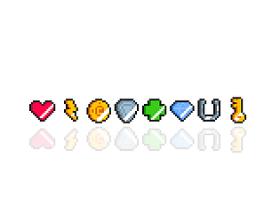

Professional Experience
Ant International | Software Engineer
December 2024 -- Present- Developed AI-powered UI automation framework integrating RAG, custom MCP orchestration, and YOLO-OCR for natural language-driven testing across Android/iOS/web — reduced manual testing effort by 80% and accelerating regression cycles by 3x
- Designed and implemented REST API sidecar endpoint with middleware client over HTTP, decoupling test execution from message broker dependencies to improve system modularity
- Built Python-based AI evaluation pipeline including automated data collection, response assessment algorithms, and prompt optimization system to enhance model performance metrics by 55%
- Designed and implemented comprehensive test automation infrastructure using TestNG and Selenium, and developed reusable component libraries following SOLID principles and design patterns
- Identified 80% of defects in code review phase through systematic analysis of code changes, design patterns, and API contracts
- Guided junior engineers on automated testing approaches, test case design, and defect tracking workflows
- Recognized with Technical Savvy Award for exceptional technical contribution, strong project ownership, and commitment to engineering excellence
LeapSeed Sdn Bhd | Freelance Software Engineer
May 2024 -- August 2024- Developed and optimized web applications using PHP Laravel
- Built dynamic, responsive UI components using modern JavaScript (ES6+), HTML5, and CSS3
- Designed and implemented secure RESTful APIs with comprehensive error handling
Juris Technologies | Part Time Software Engineer
February 2024 -- May 2024- Developed API integration layer for assignment request system
- Engineered complex PL/SQL stored procedures, database triggers, and optimized queries in Oracle Database for business logic implementation
- Implemented new features and enhancements to existing enterprise applications
- Collaborated with product managers, business analysts, and cross-functional development teams to translate business requirements into technical specifications and deliverable solutions
Juris Technologies | Intern Software Engineer
November 2023 -- February 2024- Developed end-to-end features using PHP backend with MySQL database integration and JavaScript frontend
- Wrote clean, maintainable code following team coding standards and design patterns
- Conducted systematic debugging using IDE debugging tools and logging frameworks, performed root cause analysis on software defects
- Created technical documentation including UML class diagrams, sequence diagrams, entity-relationship diagrams, and system architecture documentation
Open Source Contributions 
codefuse-ai/CodeFuse-Embeddings
November 2025 -- December 2025Contributed features to scale and optimize embedding model training infrastructure: implemented Ray distributed training for multi-node GPU clusters, added encoder-only model support, developed gradient accumulation for memory optimization, and integrated LoRA/PEFT fine-tuning to reduce training costs by 60%
codefuse-ai/SWE-CARE
November 2025 -- December 2025Engineered data collection pipeline using GraphQL API to fetch and process GitHub PRs, implemented ML-based difficulty classification algorithm (Easy/Medium/Hard), constructed structured task JSON datasets, and created reproducible evaluation instances from 5+ open-source repositories
Key Technical Projects
ROS-Based Autonomous Navigation System
Python, C++, ROS, LiDAR, Computer Vision March 2024 -- October 2024- Integrated 2D LiDAR and 3D depth camera sensor fusion pipeline for real-time pose estimation with 95% accuracy in dynamic environments
- Implemented and benchmarked three SLAM algorithms (Cartographer, Gmapping, Karto), optimizing loop closure detection and map consistency for complex indoor navigation scenarios
- Developed obstacle detection and avoidance system using KD-tree algorithm and point cloud descriptor matching
- Built voice-controlled command interface with natural language processing, integrating cloud API for real-time robot interaction and autonomous task execution
Intelligent Tutoring System (ITS)
Java, Algorithm Design, Git March 2023 -- October 2023- Designed and implemented code-similarity detection engine using Abstract Syntax Tree (AST) alignment and Levenshtein-based variable mapping algorithm, achieving 92% accuracy in plagiarism detection
- Integrated similarity scoring module into automated grading pipeline
Nine Men Morris Game
Java, JavaFX, Software Design, Git March 2023 -- June 2023- Developed full-featured game application in agile team of four, implementing MVC architecture and following Object-Oriented design principles (SOLID, design patterns)
- Created comprehensive software design documentation including UML class diagrams, sequence diagrams, interaction diagrams, and architectural design rationale
- Implemented build automation and deployment pipeline, compiling cross-platform executable JAR files for macOS and Windows distribution
Academic Background 
Monash University Malaysia
Selangor, Malaysia Bachelor of Software Engineering (Honours) -- First Class March 2021 -- November 2024- CGPA: 3.913/4.0 | WAM: 83.175% | Dean's Honour List: 2022, 2023, 2024
- Jeffery Cheah Entrance Scholarship recipient for academic excellence
- Relevant Coursework: Advanced Algorithms & Data Structures, Software Architecture & Design, Object-Oriented Programming, Database Systems, Artificial Intelligence, Software Engineering Process, Software Quality Assurance, Computer Architecture, Distributed Systems
Awards & Recognition 
- Technical Savvy Award, Ant International (2024) -- For exceptional technical skills and engineering excellence
- Dean's Honour List, Monash Faculty of Engineering (2022, 2023, 2024) -- Top 10% academic performance
- Gold Medal, PESTA TRIZ 2022 Competition by Malaysia TRIZ Innovation Association
- Qualification Round, Shopee Code League 2022
- Second Runner Up, ENG2801 Sustainable Development Design Competition
- Top 6 Finalist, Monash Hackathon 2021 Open Category
Technical Skills 
Programming Languages
Python, Java, JavaScript, C++, C, SQL (PL/SQL), PHP, HTML5, CSS3
Backend Development
REST API Design, Microservices Architecture, Message Queues (Kafka), Middleware Development, Server-Side Logic
Frontend Development
ReactJS, JavaFX, Responsive Design, Cross-Browser Compatibility, UI/UX Implementation
Frameworks & Libraries
Laravel (PHP), NodeJS, TestNG, Selenium, ROS, Spring (familiar)
AI/ML Technologies
RAG Systems, Computer Vision (YOLO), Reinforcement Learning (MDP, Q-learning), Model Training & Evaluation
Database Systems
Oracle Database, MongoDB, SQL Server, Database Design, Query Optimization, PL/SQL
DevOps & Tools
Git/GitLab, Docker, CI/CD Pipelines, Postman, DBeaver, Android Studio, Anaconda, MATLAB
Software Engineering
System Architecture, Algorithm Design, Design Patterns, SOLID Principles, Agile/Scrum, Code Review
Specialized Skills
SLAM Navigation, Distributed Systems, API Integration, Automation Engineering, Performance Optimization
Contact
Feel free to reach out to me via email or connect with me on professional platforms.

Phone
+60186695811